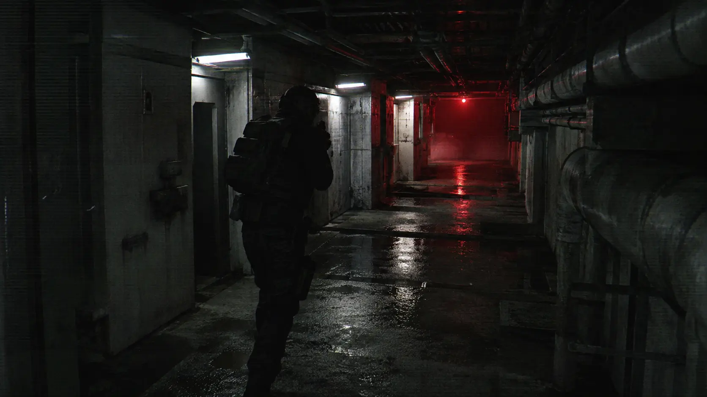

DEPLOY
Enter hostile sectors built to break routine.
OPEN CHANNEL // UNKNOWN SOURCE
Enter RED STATIC — a relentless roguelite survival operation where every deployment makes you stronger, every sector grows more hostile, and death is only another transmission.
You enter with a plan. The sector reacts. Build pressure, adapt your loadout, and survive long enough to bring something back.
Enter hostile sectors built to break routine.
Weapons, abilities, operatives and upgrades evolve inside the run.
Extract resources — or disappear with them.

Issued hardware does not stay issued. Every evolution trades control for output until the weapon stops resembling the thing you carried in.
We thought it was a transmission.
It was listening.
RED STATIC is in active development. Build notes, deployed systems and upcoming operations will live here without breaking the fiction of the site.
INCOMING TRANSMISSION